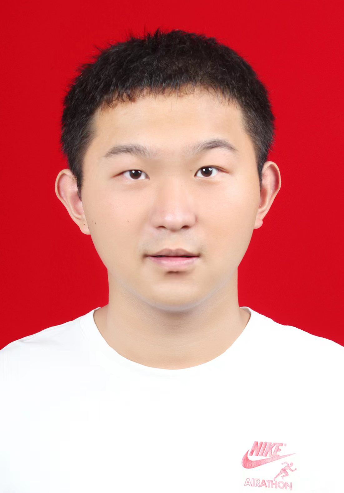
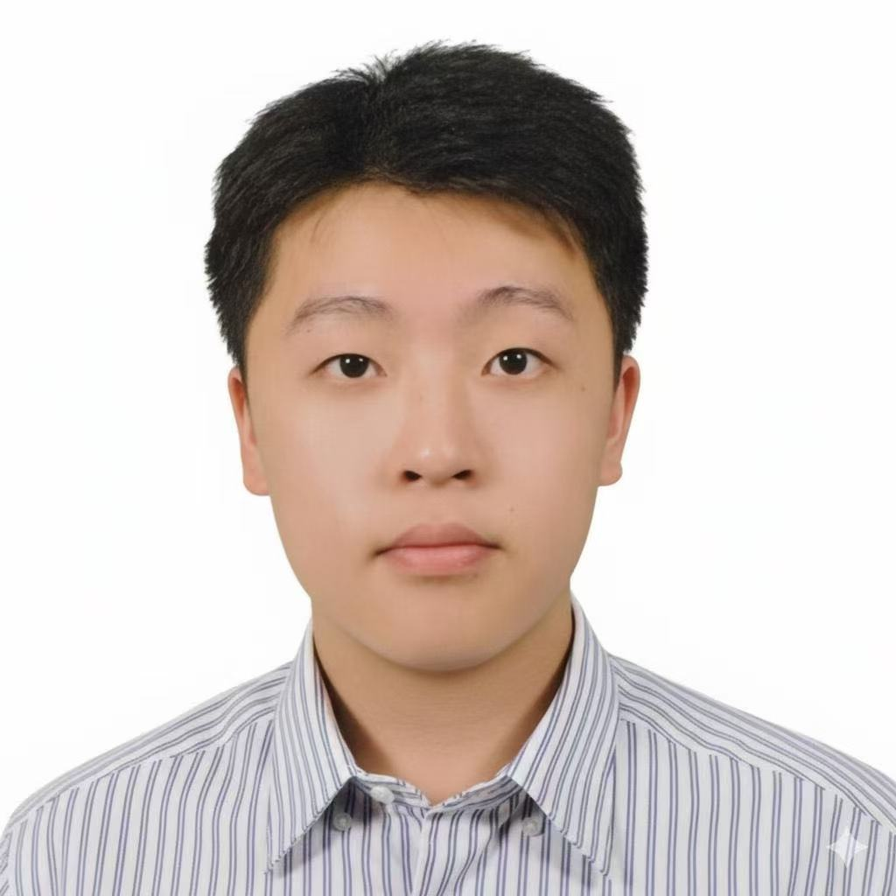
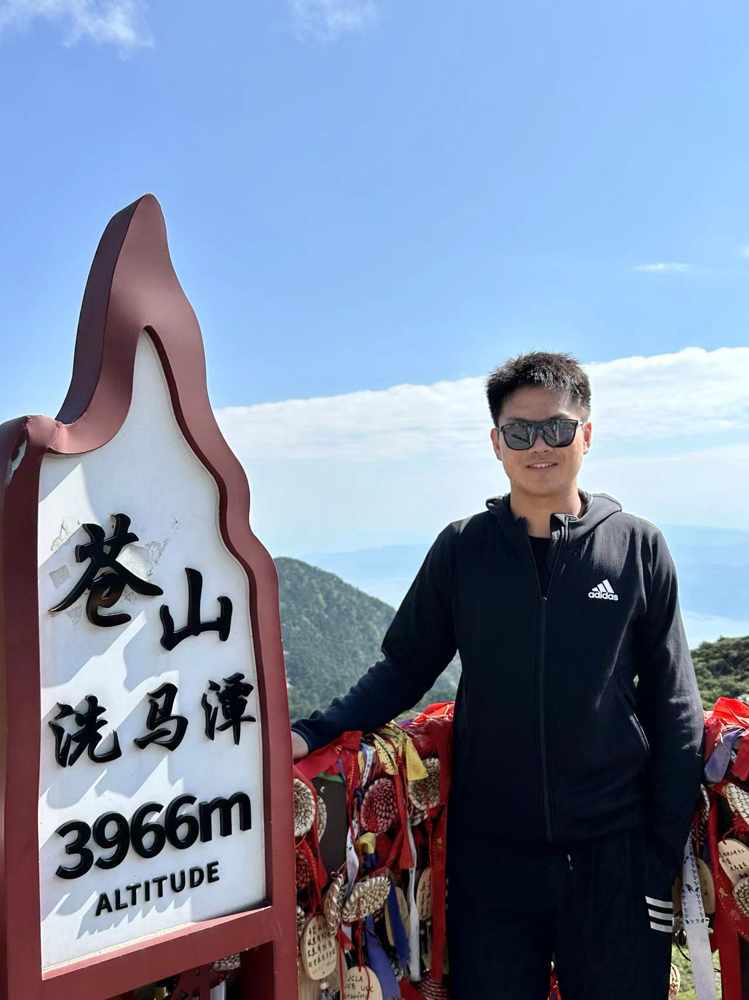

Networked Intelligence and Security (NISE) Group
Our research seeks to develop an information-theoretic foundation for networked intelligence and security. As intelligent systems evolve from isolated agents to large-scale interconnected networks, fundamental questions arise regarding how information, learning, and decision-making interact across distributed systems. Our goal is to establish rigorous theoretical principles and analytical frameworks for understanding, designing, and optimizing such systems.
To this end, we draw upon information theory as a unifying framework, complemented by tools from learning theory, stochastic processes, and network science. We aim to characterize the fundamental limits, emergent behaviors, and design principles of intelligent networked systems, while advancing the mathematical foundations needed to support the next generation of distributed intelligence.
Although our primary focus is on fundamental theory, we are equally committed to translating theoretical insights into practical methods that enable real-world applications, thereby connecting mathematical rigor to technological innovation and societal impact.
Current Members
Master's Students
|
 |
Yi Zhuang |
|
 |
Taichun Yeh |
Ruoqi Lu |
Alumni
Former Master’s Students
 |
Kai Li |
Former Undergraduate Students
|
 |
Bohao Yang |